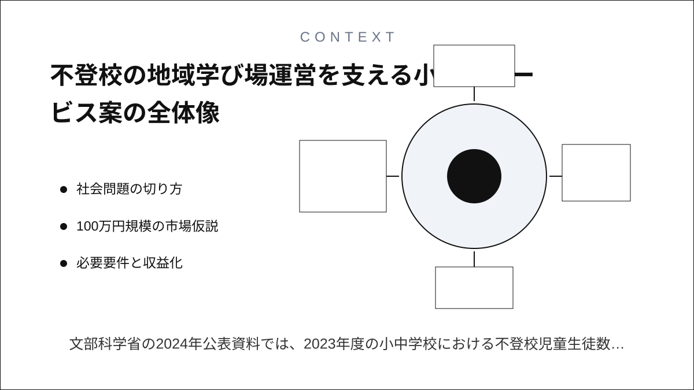
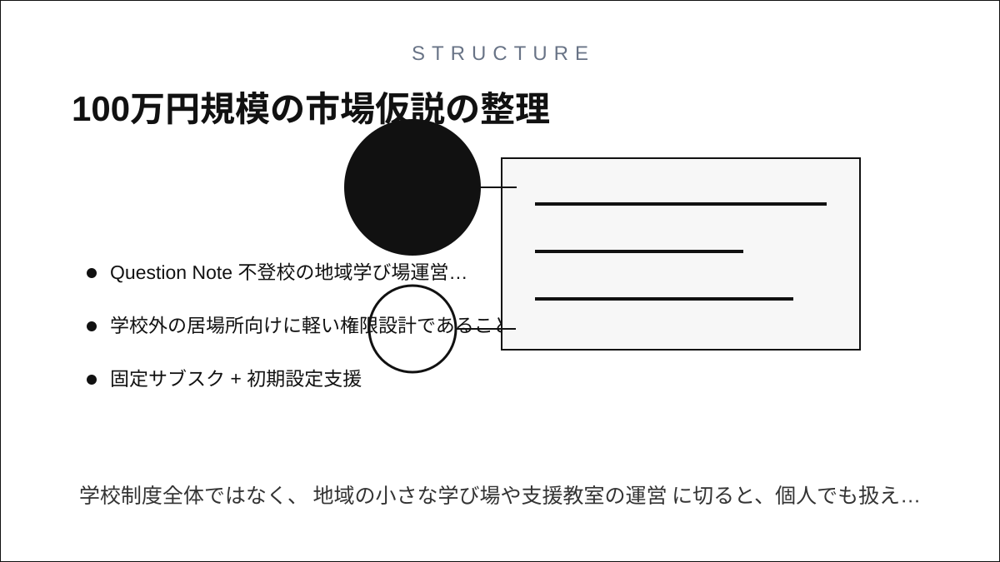
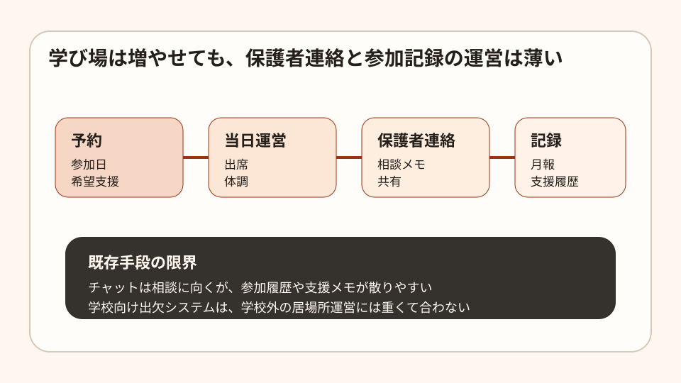
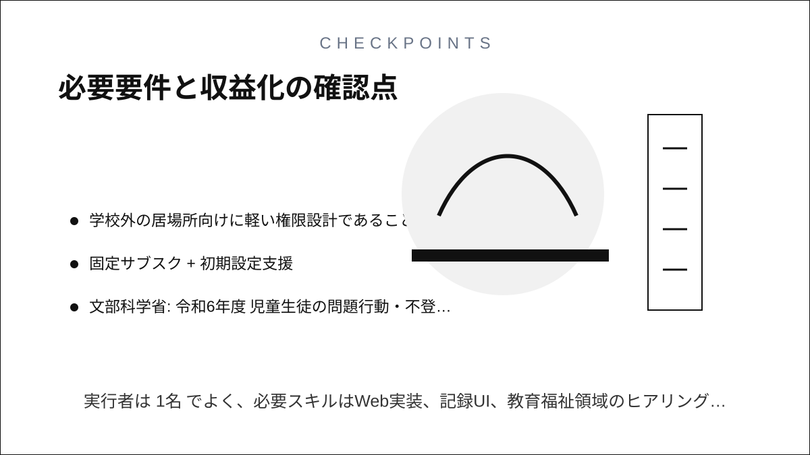

Question Note
不登校の地域学び場運営を支える小規模サービス案



文部科学省の2024年公表資料では、2023年度の小中学校における不登校児童生徒数は 346,482人、2026年1月公表の令和6年度資料では353,970人へ増えています。 こども家庭庁の居場所指針も、地域で切れ目のない居場所づくりを求めています。
社会問題の切り方
学校制度全体ではなく、地域の小さな学び場や支援教室の運営に切ると、個人でも扱える課題になります。
| 課題 | 既存手段の限界 | 欲しい機能 |
|---|---|---|
| 参加予定の把握が曖昧 | LINEで流れる | 予約と出席管理 |
| 相談メモが散る | 担当交代で引継ぎにくい | 支援履歴 |
| 保護者との温度差 | 連絡頻度が人依存 | 定型報告と共有 |
100万円規模の市場仮説
初年度は地域の学び場・支援教室・フリースクール 80拠点を見込み客に置きます。
| 項目 | 仮定 | 結果 |
|---|---|---|
| 到達可能拠点数 | 80 | 現地訪問できる範囲 |
| 初年度シェア | 10% | 8拠点 |
| 年額利用料 | 84,000円 | 672,000円 |
| 初期設定支援 | 24,000円 x 8 | 192,000円 |
| 月次面談メモ整備 | 13,000円 x 12回の一部導入 | 156,000円 |
| 初年度売上 | 合計 | 1,020,000円 |
必要要件と収益化
- 出席、相談、保護者連絡が同じ画面で終わること
- 学校外の居場所向けに軽い権限設計であること
- 固定サブスク + 初期設定支援
実行者は1名でよく、必要スキルはWeb実装、記録UI、教育福祉領域のヒアリング、継続運用です。
